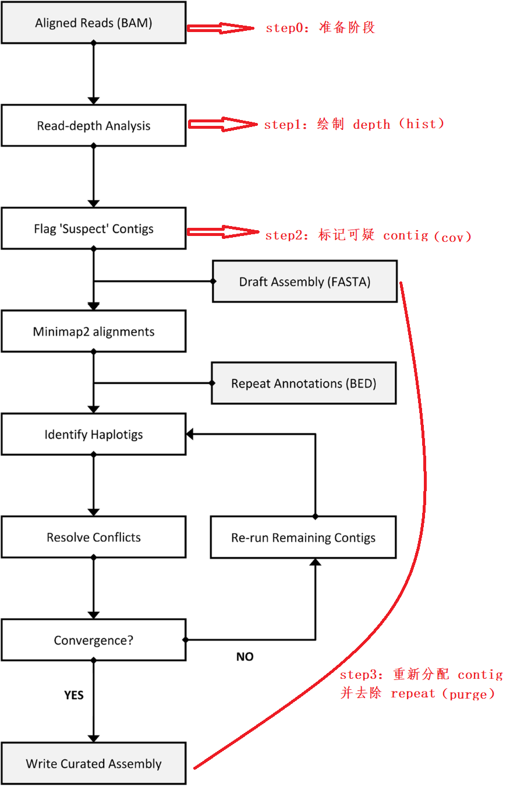

Purge Haplotigs --- allelic contig reassignment
Introduction
Purge Haplotigs
主要用于三代测序数据组装校正，主要服务于高度杂合的基因组组装，以自动重新分配等位基因重叠群(automate the reassignment of allelic contigs)。
原理：通过识别和重新分配等位基因组重叠群来改进基于三代测序的基因组组装的单倍体和二倍体表示。
与基于比对的方法相比，该实现速度快且可以很好地扩展大型基因组，并且不太可能过度清除重复或旁系同源基因。
haplotigs：单倍体
primary contigs：主要重叠群（the haploid assembly），即通过 Canu / Falcon 得到的初步组装（contig-level）
diploid aware：二倍体感知
haplotype-fused： 单倍型融合
secondary haplotigs：次级单倍体
hemizygous：半合子，基因是单价的，即没有与之相对应的等位基因的合子
haploid representation：单倍体表示
二倍体组装是由 primary contigs 和
secondary haplotigs 的结合组成单倍体。
理想的单倍型表示（primary contigs）将由两个单倍体中所有杂合区域的一个等位基因拷贝以及来自两个单倍体的所有半合子区域组成。这确保了任一单倍体中任何区域都完全比对到单倍体表示中的单个位置。secondary haplotigs
应包含在两个单倍体中发现的杂合区域的两个等位基因拷贝之一；单倍体用作单倍体表示的相位信息。
特点：仅需要三个步骤；将作用于单倍体组装以产生去重复的单倍体组装，或作用于二倍体组装以产生改进的、去重复的初级单倍体组装和更完整的次级单倍体组装。
Purge Haplotigs 实现流程图

来自：https://bmcbioinformatics.biomedcentral.com/articles/10.1186/s12859-018-2485-7/figures/1
Installation
采用 conda 安装：
1 | conda create -n purge_haplotigs -c conda-forge -c bioconda purge_haplotigs |
不管怎么样，总是会遇到 conda
不老实的情况，反正我的服务器并不能通过上面命令正常配置
purge_haplotigs 环境（出现长时间无响应）。
于是，我通过下面 mamba 成功安装：
1 | conda create -n purge_haplotigs python=3.6 -y |
总而言之，我服务器上的
conda真是一言难尽，几经辗转，勉强能用，如你未能通过官方提供的方案安装，可以尝试使用mamba配置相关环境。
这样一来，运行 Purge haplotigs
所需的各种依赖环境就解决了。
可以通过 purge_haplotigs test
运行示例，查看环境是否配置成功；如无任何
ERROR，将会在工作路径生成一个名为
tmp_purge_haplotigs 的文件夹。
Getting Started
- haploid or diploid genome assembly【初步组装】
- PacBio subreads, or some decent long reads (or even short reads)【三代原始测序数据或二代双端 reads】
Step 0：Get BAM file
将三代测序数据映射到初步组装中。并得到排序后的 BAM 文件。
1 | # conda activate purge_haplotigs |
-h：默认输出 sam 文件不带表头，-h参数将输出带有表头信息的sam
-F：mapped 的过滤设置【默认为0】
-m：每个线程运行内存大小
-T：临时文件前缀
Step 1：purge_haplotigs hist
运行第一步，生成覆盖度直方图，从而 手动获取 Low
Cutoff、Mid Point、High
Cutoff。以便进行 Step 2。
1 | purge_haplotigs hist -b aligned.bam -g ${assembly} [ -t threads ] |
-b：BAM 文件（Step 0 生成的 bam ），其中包含比对和排序到参考基因组的 reads/subreads
-g：生成 BAM 文件的参考基因组，即我们需要处理的初步组装（primary assembly）
-t：线程数【默认：4，最小为 2】
这一步骤运行成功之后，你会得到一个 PNG 展示
reads-depth。顺利的话，应该会得到一个双峰直方图（一个代表单倍体覆盖水平，另一个代表二倍体覆盖水平）。
注意：
如使用分阶段组装（phased assembly），二倍体峰可能非常小。
- 示例图 1 【Primary + Haplotigs】

来自：https://bitbucket.org/repo/Ej8Mz7/images/84978409-phased_coverage_histogram.png
- 示例图 2 【Primary contigs】

来自：https://bitbucket.org/repo/Ej8Mz7/images/1039246939-coverage_histogram.png
其中图标识的
Low Cutoff、Mid Point、High Cutoff
三个值是需要我们从图中得出的，分别指示 Step 2 中
-l、-m、-h。
Step 2：purge_haplotigs cov
使用 Step 1 得到的三个 Cutoff
值运行第二个脚本，以逐个重叠群分析覆盖率。最终生成 contig 覆盖率统计 csv
文件（coverage_stats.csv），其中标记了可疑的 contig
以供进一步分析或删除。
1 | purge_haplotigs cov -i aligned.bam.genecov \ |
-i：Step 1 -purge_haplotigs hist产生的 aligned.bam.genecov。
-l：reads 深度低截止点（Low cutoff）
-m：单倍体和二倍体峰之间的低点（Mid point）
-h：reads 深度高截止点（High cutoff）
-o：输出文件名【默认：coverage_stats.csv】
-j：Auto-assign contig as "j" (junk) if this percentage or greater of the contig is low/high coverage (DEFAULT = 80, > 100 = don't junk anything)
-s：Auto-assign contig as "s" (suspected haplotig) if this percentage or less of the contig is diploid level of coverage (DEFAULT = 80)
Step 3：purge_haplotigs purge
这里将自动运行 BEDTools 窗口化覆盖分析和
minimap2
对齐，以评估要重新分配哪些重叠群以及保留哪些重叠群。管道将进行多次
purge 迭代。
1 | purge_haplotigs purge -g ${assembly} -c coverage_stats.csv |
-g：初步组装，并samtools faidx进行索引
-c：Step 2 得到的coverage_stats.csv
-t：线程数【默认：4】
-o：精选组装（curated assembly）的输出前缀【默认：curated】
-r：--repeats，BED 格式的重复注释文件，以改进对重复区域的处理；若无，可以不用
-d：生成用于手动检查的点图
-b：如需生成点图，则必须 -b 引入 samtools 索引的 bam 文件，其中包含对参考的对齐和排序 reads/subreads。即aligned.bam。
-a：--align_cov， 将 contig 识别为 haplotigs 的百分比截至值【默认：70】
-m：--max_match， 用于识别重复重叠群的百分比截至值，使用 --repeats 参数时忽略，【默认：250】
-I：Minimap2 indexing, drop minimisers every N bases【默认：4G】
-v：打印所有内容
-limit_io：I/O 密集型作业的限制【默认：--threads】
-wind_min：BED 覆盖图的最小窗口大小（dot plot）【默认：5000】
-wind_nmax：每个重叠群的最大窗口，用于 BED 覆盖度（dot plot）【默认：200】
Results
成功运行上面的流程，将会得到五个输出文件：
.fasta ：最终得到的主要重叠群。.haplotigs.fasta ：在初始输入组装中识别得到的所有 haplotigs.artefacts.fasta ：覆盖度非常低/高的重叠群（在 Step 2 中确定）.reassignments.tsv ：已进行的所有重新分配，以及未重新分贝的可以 contig.contig_associations.log ：This shows the contig "associations"
如有生成点图：
- dotplots_unassigned_contigs：未分配的可疑重叠群的 Dotplot
- dotplots_reassigned_contigs：重新分配的重叠群的 Dotplot
局限性： Purge Haplotigs
目前仅针对二倍体基因组进行了测试。应该注意的是，单倍型转换（haplotype switching）经常发生在
FALCON-Unzip 相邻 phased block
之间的主要重叠群中。由于连续变体之间的距离较大，通常需要较长范围的链接信息来完全重建两个单倍体，因此可能会发生定相中断。故
Purge Haplotigs
无法解决单倍型转换（haplotype switching）问题，相反，它只会尝试识别等位基因的重叠群并产生基因组的去重复表示。
Example
前几天，通过 CANU 设置
corOutCoverage=200 "batOptions=-dg 3 -db 3 -dr 1 -ca 500 -cp 50"
参数获得了一个二倍体 primary + haplotigs。首先通过 Busco
分析 ---
C:98.9%[S:46.5%,D:52.4%],F:0.2%,M:0.9%,n:1614，获知其中包含
52.4% 的重复。
1 | # conda activate purge_haplotigs |
- 确定三个
Cutoff value
所以，这里选用的三个截止值为
-l 6 -m 60 -h 120。
最终得到清洗过的主要重叠群文件 ---
curated.fasta重新进行 Busco 分析，得到：
C:98.3%[S:94.3%,D:4.0%],F:1.1%,M:0.6%,n:1614，显示最终只保留了4%的重复，序列完整性很可观。Purge Haplotigs 前后的数据质量
Summary genome.fasta curated.fasta asm_contigs 3,464 547 asm_max 3,156,869 3,156,869 asm_mean 112,376 400,990 asm_median 48,698 236,405 asm_min 1,852 2,143 asm_n50 259,489 767,220 asm_n90 4,0764 198,193 asm_n95 3,1484 129,397 asm_total_bp 389,273,046 219,341,935 genome.fasta- 是我通过 Canu 组装得到的单倍型混合二倍体基因组curated.fasta- 经过 Purge Haplotigs 清洗得到的 primary contigs通过简单的对比，在去除掉将近
50%的重复之后，明显提高了序列的连续性（N50 更长），最终的基因组大小也符合该物种单倍型大小。也可以认为，原本希望得到混合二倍体单倍型组装，但是最终只得到了一个单倍型敏感的 contigs。
References
[1] https://bmcbioinformatics.biomedcentral.com/articles/10.1186/s12859-018-2485-7
[2] https://bitbucket.org/mroachawri/purge_haplotigs/src/master/
[3] https://www.jianshu.com/p/f1e649c6ed40